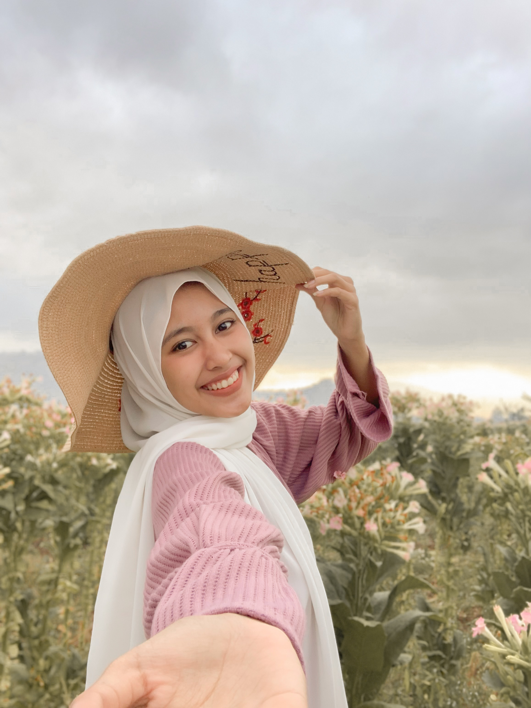
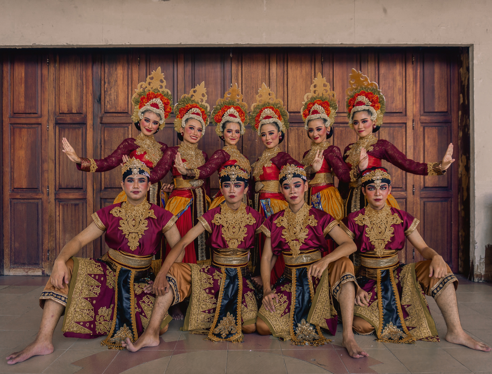
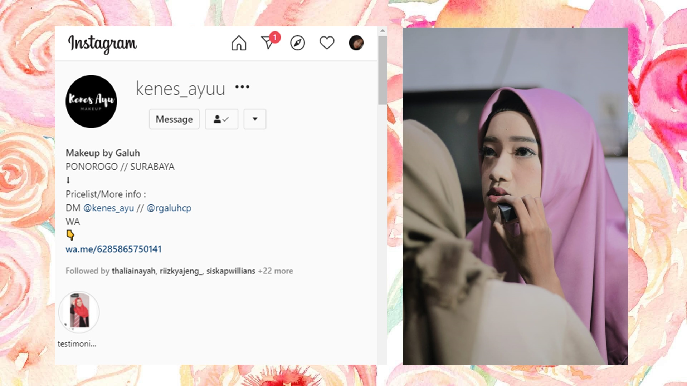

[ About Me ]
Photo of me:
Hallo gaiiss kenalin namaku Ramadhani Galuh Candra Purtiwi. Biasanya sih dipanggil Galuh hehe. Aku lahir di Ponorogo, tanggal 17 Desember 2000. Sekarang aku tinggal di Desa Kauman, Kecamatan Kauman, Ponorogo, Jawa Timur. Sekarang aku lagi kuliah di departemen Sistem Informasi ITS. Salam kenal semua.....
[ Some Links ]
Di bawah ini ada hobi aku dan juga ada link tugas aku...
>> MENARI
Photo :
Menari Tradisional adalah salah satu hal yang aku sukai. Selain untuk melestarikan kebudayaan Indonesia, dengan menari aku bisa mengekspresikan diriku. Di ITS aku mengikuti UKM UKTK Tari Tradisional. Foto di atas adalah salah satu fotoku menari saat acara peingatan Dies Natalies ITS. Saat itu grup tari UKTK ITS berkolaborasi dengan anak PSM untuk menyuguhkan hiburan di acara Dies Natalies. Pengalaman yang baru tentunya karena koreografernya dari kampus lain yaitu UNESA yang dengan kreatinya membuat penampilan sangatlah bagus.
>> MERIAS
Photo :
Nah kalo hobi aku yang satu ini dimulai aku SMA. Sebenernya sebelum itu aku juga udah belajar make up wajah Aku sendiri dan cuma iseng-iseng aja. Saat aku lulus SMA, karena libur panjang, aku memutuskan untuk membuka jasa makeup untuk acara foto album, wisuda, prewedding, dan acara lainnya dan membuat akun instagram (@kenes_ayuu). Alhamdulillah banget ada yang suka sama hasil makeup aku.. Disitu aku sambil belajar biar hasil makeup aku semakin bagus dan banyak yang suka. Sampai saat ini, aku masih ngejalanin hobi ini karena juga aku bisa dapet banyak banget keuntungan dengan membuka jasa makeup ini.
By Rgaluhcp